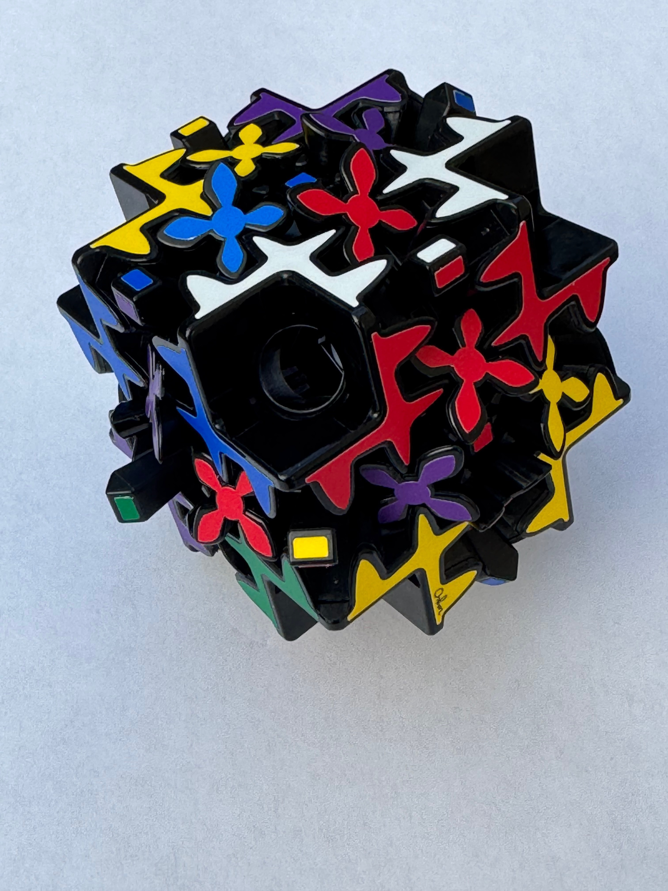
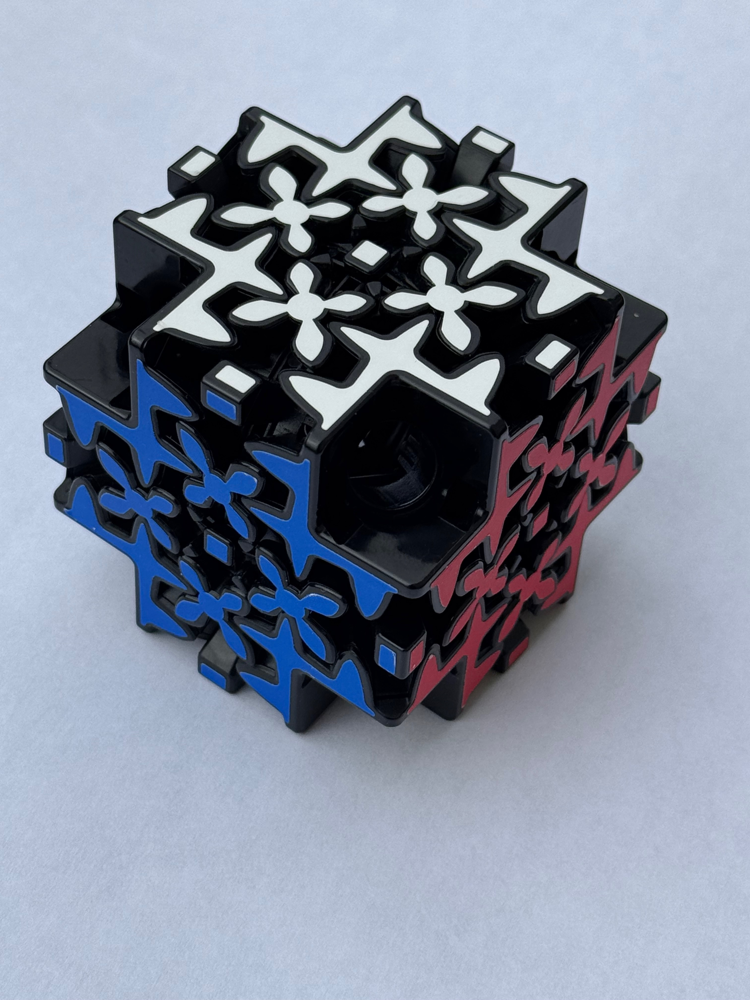
This is a beautiful puzzle with unique "rotating gear" pieces, and it feels great to hold and twist. It's also the hardest puzzle I have, the only one I had to write code for to help keep track of things. It is very rewarding to work out a solution, but I have to warn that it's somewhat tedious to work through all the steps and actually solve it.
The eight corners are equivalent to a 2x2x2 Rubik's cube, but there are gear pieces that interlock with the corners and rotate. A unique feature is that turning one of the slices by 90° causes the "middle slice" of adjacent gear, edge, and face center pieces to rotate by 45°, so that such pieces can end up out of position (e.g. a face center piece can end up in an edge position). What makes it especially difficult is that the simplest possible basic move (rotating one slice 90°) changes the position of almost two thirds of the pieces, and the intersection of any two basic moves changes over a third of the pieces; any simple combination of moves affects pieces all over the puzzle, making it difficult to find short sequences that make only "local adjustments". It is also hard to do "setup moves" to move pieces into place for known sequences.
A solved cube will have:
There are various ways to attack this. I tried a few approaches and found the below to require the fewest total moves. Even so, it involves some long sequences which need to be repeated several times:
There are six Faces, which we'll label Front, Back, Up, Down, Right, and Left, abbreviated as F, B, U, D, R, and L. The images always show the white Face as Up and the blue Face as Front. But you can assign the colors however you want; the U Face is whichever one is on top at a given time.
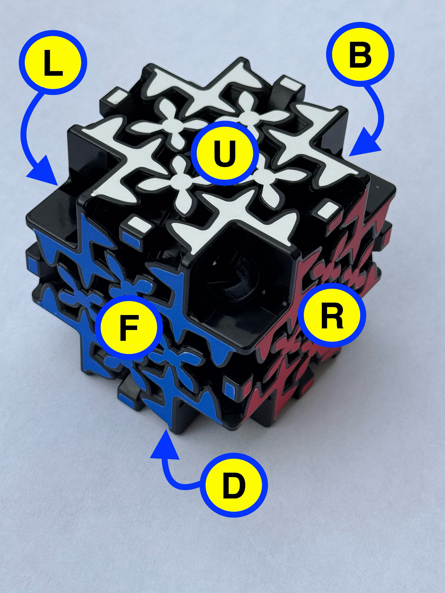
There are six basic moves: rotate any of the six Faces 90° clockwise, as viewed from the corresponding Face. In the sequences below, we'll denote these by the first letter of that Face: F, U, R, B, D, or L.
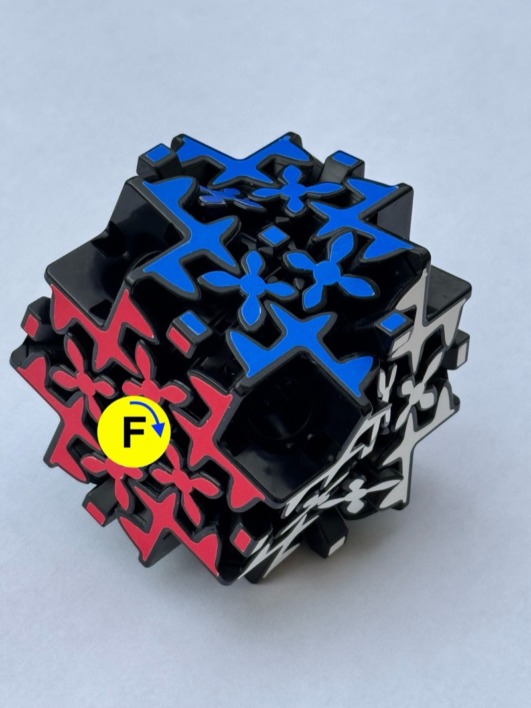
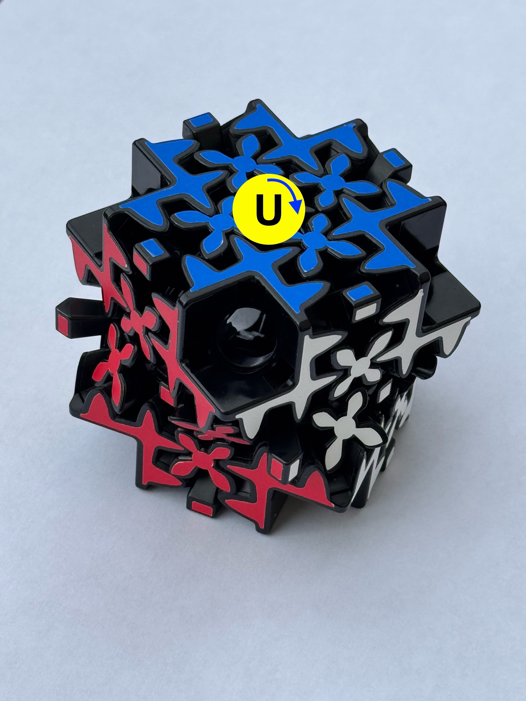
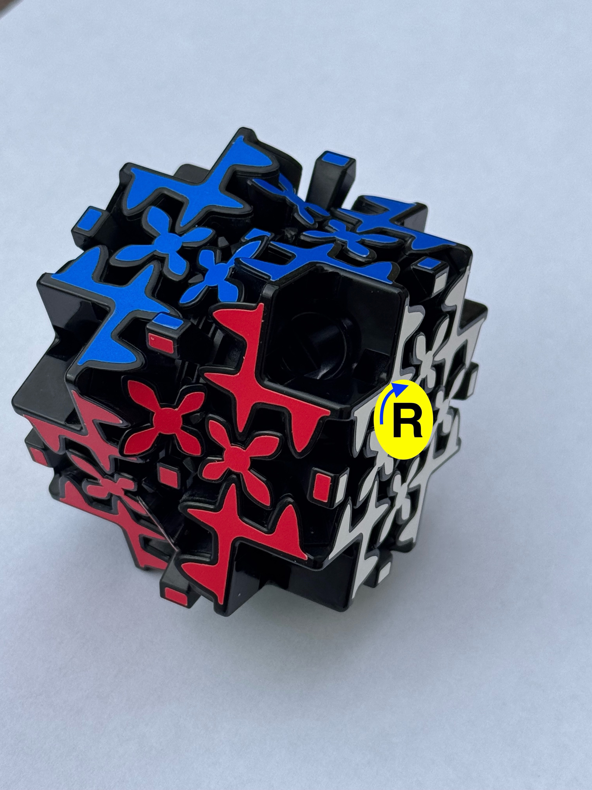
The corresponding B, D, and L moves aren't shown. The key thing to keep in mind is that each move is clockwise as viewed from that Face. So, if you are looking at the cube from the Front, a B move will appear counterclockwise.
If we want to do the same move multiple times in a row, we'll just put a number after the move. For example:
Important Note: Rotating by 360° does not bring the puzzle back to its original state. And rotating 270° clockwise is not the same as rotating 90° counterclockwise. The reason is that the central Gear pieces move half as far around as the Face that's being moved. For this reason, F, F2, F3, F4, F5, F6, and F7 are all different moves. If you see an F7, you can just move the Front slice counterclockwise by 90°, but that doesn't work for F3.
There are eight Corner pieces, four on each face, and each Corner on three faces. Number them from 1-8, starting with the Front-Up-Left Corner, going counter-clockwise around the Up face, then Front-Down-Left, going clockwise around the Down face (so that n+4 is directly under n). To distinguish Corners from other types of pieces, we write a C in front of the number, as in C7. All Corner pieces are easily distinguishable from each other by their colors.
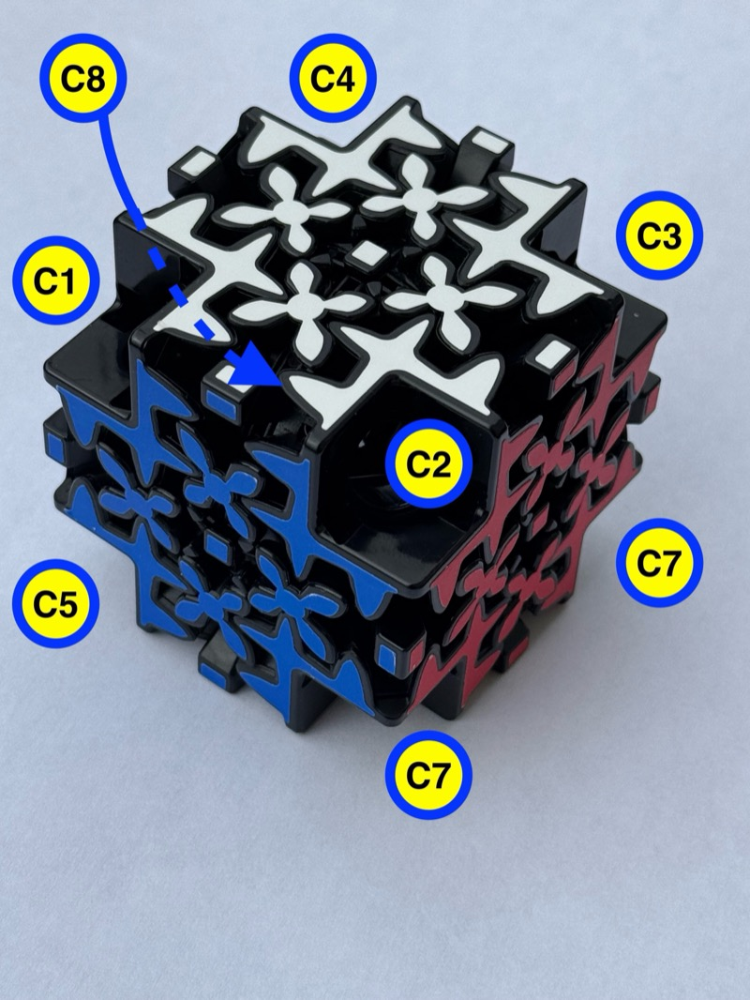
There are 24 Gear pieces, four on each face, and each Gear on only a single Face. Number them 1-4 clockwise on each face, with 1 being closest to Front, or closest to Up for Gears on the Front and Back faces. So a given Gear is referred to by a face letter and a number, for example F1. The Gears are not fully distinguishable; there are four of each color, which are indistinguishable from each other.
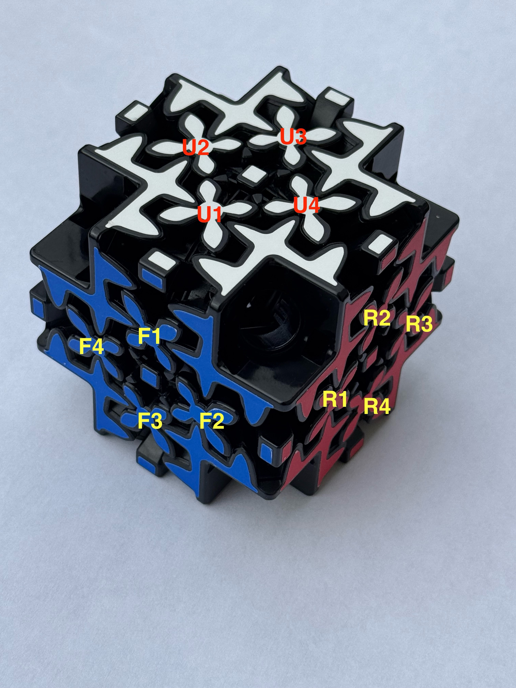
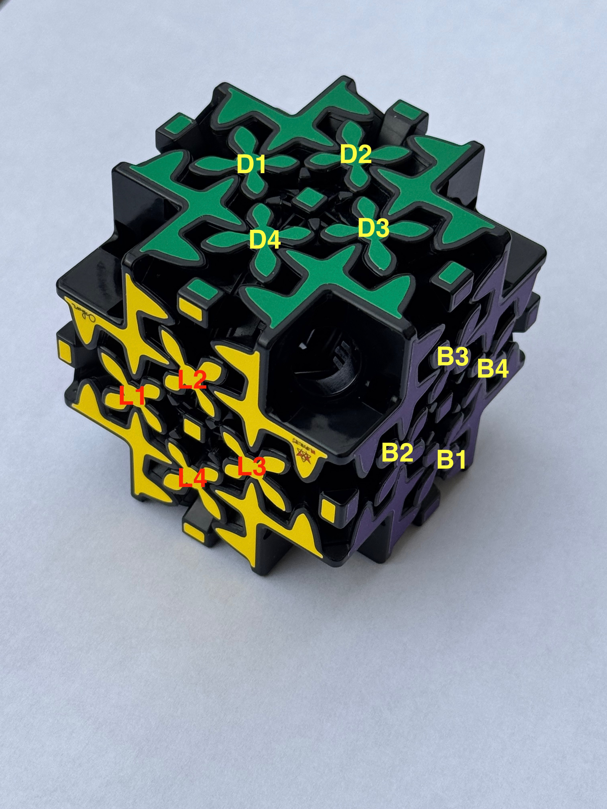
There are twelve pieces on the edges of the cube, between adjacent Corners, and six pieces on the centers of the faces. We will treat these all as one group, called Edges, since they can be moved to each others' positions by the basic moves. When we need to distinguish between them, we'll call the former True Edges and the latter Face Center Edges.
Using this terminology, there are a total of 18 Edges. We'll label Face Center Edges by the letter of the Face (e.g. the Face Center Edge on the Up Face is "U"), and label True Edges by the two letters of the Faces they touch (the True Edge between the Up and Right Faces is "UR").
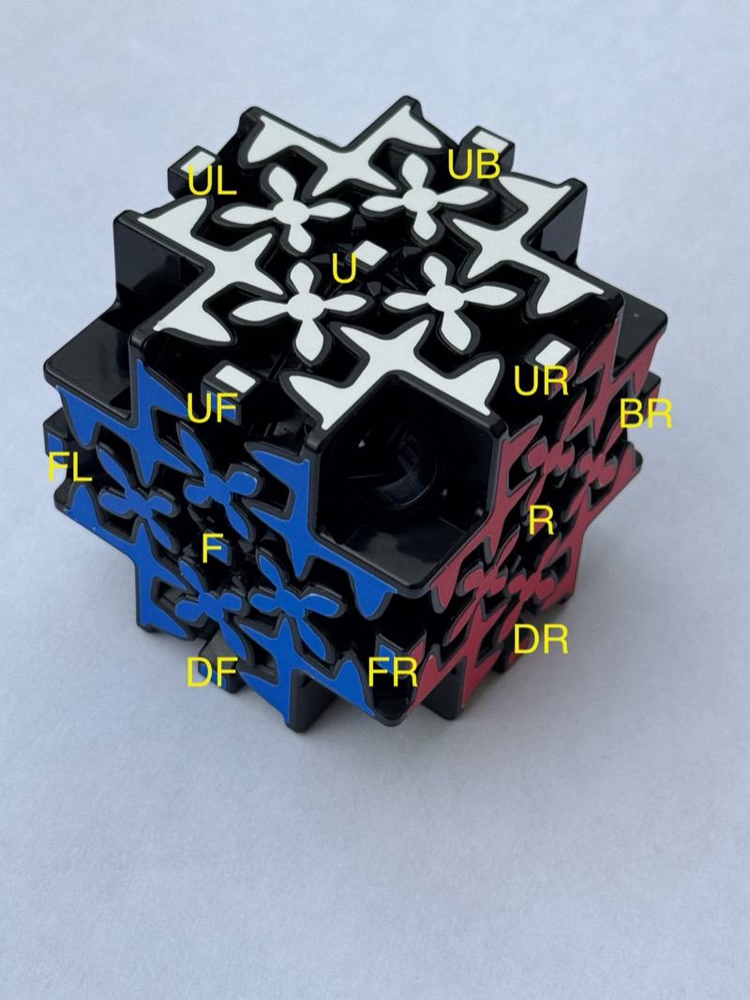
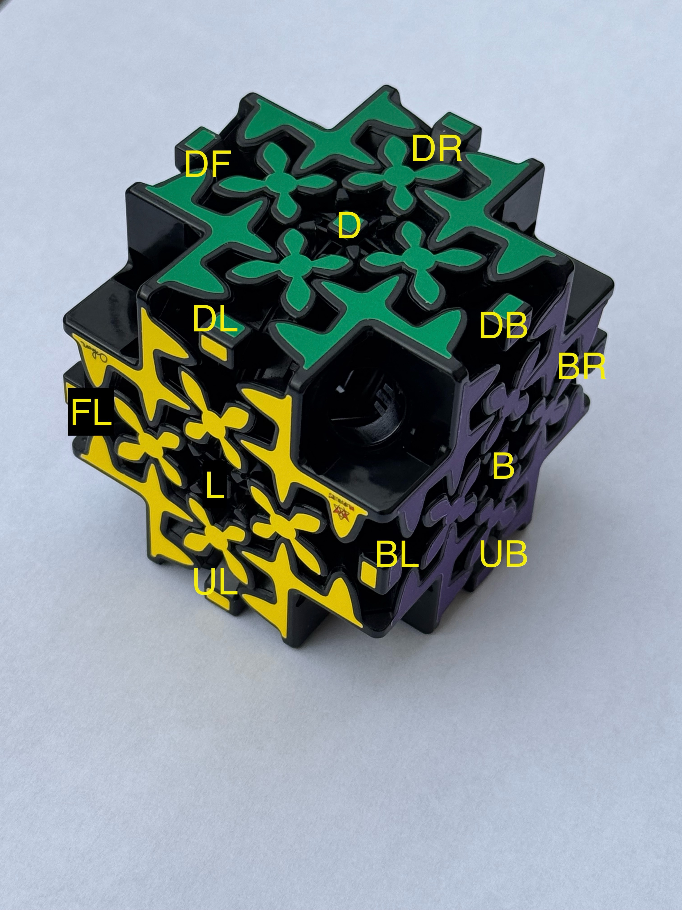
All Edge pieces are easily distinguishable from each other. Note that, unlike Rubik's cube centers, the Face Center Edges here can move independently of each other.
This is just the same as solving a 2x2x2 Rubik's cube. Ignore all pieces other than the Corners, and solve them using any standard 2x2x2 approach.
For now, ignore the Gear rotations; just get them in the correct position (without disturbing the Corners). Note that there are four Gears of each color. For each color, you need to get all four Gears to the correct face (matching the already placed Corners); you are free to choose which Gear of a given color goes in which spot on its face.
There's not much structure to the approach. Just repeatedly use the sequences below, in order, to permute Gears as needed until they're all on their correct faces.
Start by using F4, R4, or U4 to move Gears from opposite Faces (eg. from the Right Face to the Left Face) into place. This is easy, but you can only do so much of it before it starts mixing up already-placed Gears.
After this step, every Gear should be in either its correct Face or an adjacent Face.
You can use S1 in combination with simple setup moves to swap just two Gears from different Faces (along with swapping a pair within the Up Face):
These are relatively short sequences. You have to be careful with any setup moves to make sure they don't interfere with U1 and U2. Note that with both of these, a setup of R7 changes (U1 U2) to (U3 U2), still in the same face.
Other setup moves let you cycle three Gears among two Faces:
You can use the (F R7)x9 sequence from above (after rotating the entire cube) to position Gears in the Down Face into the D3 spot, which comes up in all of these sequences.
At this point, the cube should appear to be nearly solved; sadly, there's still quite a long ways to go...
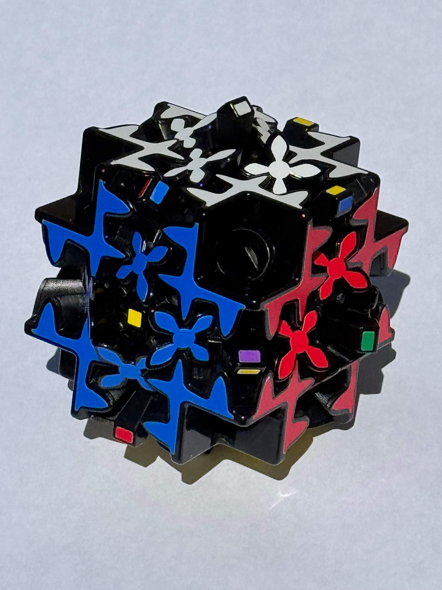
Next you need to rotate all the Gears into their correct orientations. It simplifies things to split this into two steps: first get all the Gears into "even" rotations, either correct or flipped (rotated 180°); then fix the Gears that remain flipped.
First, rotate the Gears so that each one is either correctly rotated or flipped. The useful sequences here are:
(All of these sequences also flip some Gears and move some Edges around, or even move (but not rotate) Gears within a Face, none of which we care about at this stage.)
You can get a lot of mileage out of S2 and various setup moves:
In case you can't find four odd-rotated Gears in positions that match any of the above sequences, you don't always have to fix four Gears at once; if you can apply a sequence to fix three Gears and disrupt one, that's still a net gain of two correct Gears. Keep at it until none of the above can be applied. Then you can try more elaborate setups, or try the below sequences for fixing two Gears at a time.
If you get down to exactly two remaining Gears needing rotation, one of the following may be helpful, depending on where those two Gears are located:
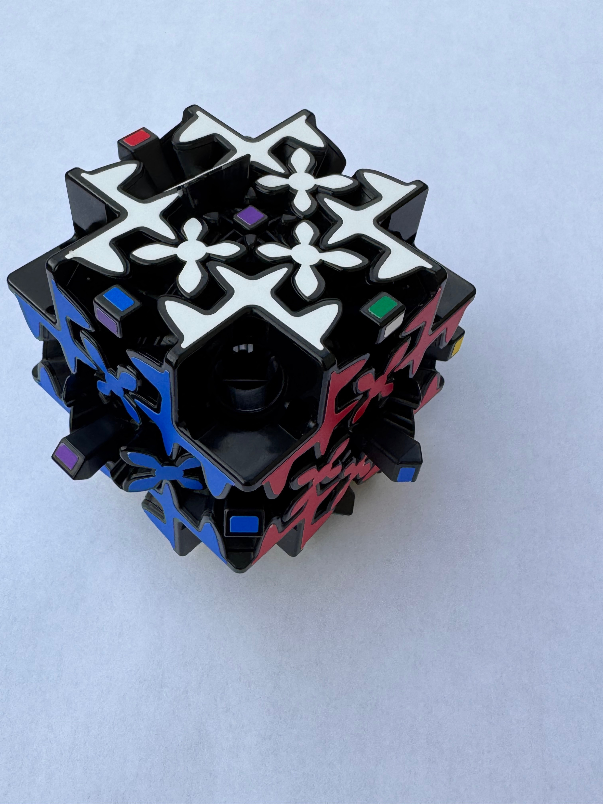
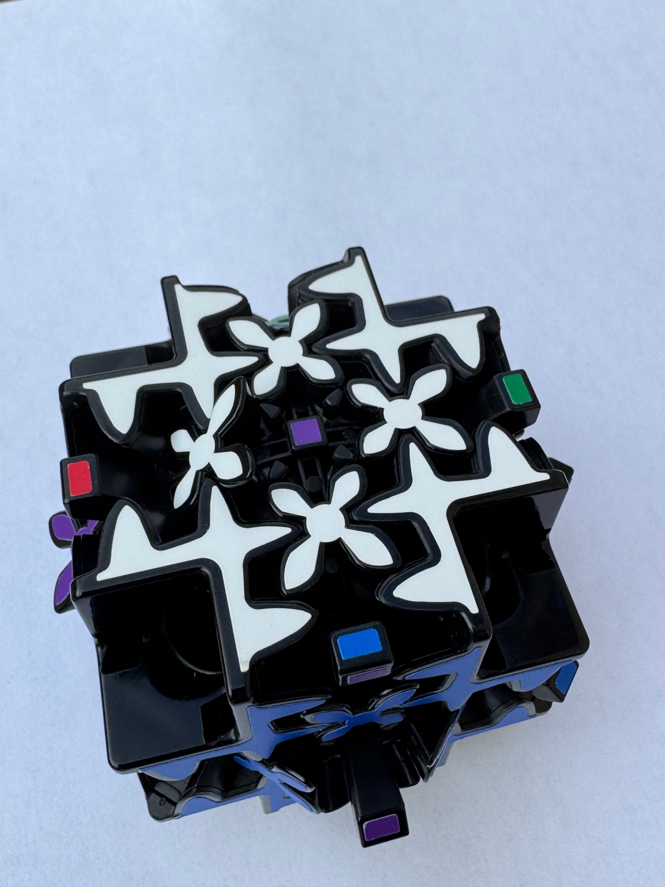
Once all Gears have "even rotation" (either correctly rotated or flipped), proceed as below to fix the rest. This is the most tedious step. All of the sequences are long, involving 70 moves or more; I couldn't find anything better. The good news is that if you can get through this, the rest is relatively easier.
There will be an even number of Gears that need to be flipped. (You can show that any move leaves the total rotation of all Gears unchanged. Since the original solved cube has 0 total rotation, every state of the cube must have 0 total rotation, which wouldn't be the case if exactly one Gear was rotated). The following sequences flip either two or four Gears at a time (most of them also move various Edge pieces around, which we don't care about yet).
You can solve all the Gears using only S6 along with setup moves, flipping two Gears at a time. The other (shorter) sequences may be convenient if the flipped Gears happen to be in certain configurations, but it's difficult to do setup moves for them because they involve four Gears on multiple Faces.
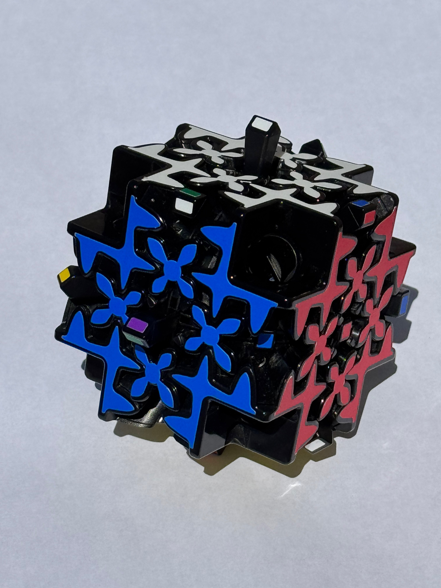
The hardest part is done. From here on the sequences are shorter and there are fewer pieces to deal with. To get the Edges (including Face Center Edges) into place, the basic sequence is:
All of the sequences below involve S8.
First use these sequences to get all Face Center Edges into their correct positions. Each sequence is a 3-cycle with two True Edges and a Face Center Edge. Specifically, each one moves a piece from the UL position to some Face Center position. These are all you need, but for some pieces you may need to use them more than once.
Then get the True Edges into position using:
You can even use S8 itself, doing (DR UL) (U D), but you'll need to swap the Face Center Edges (U D) back at some point.
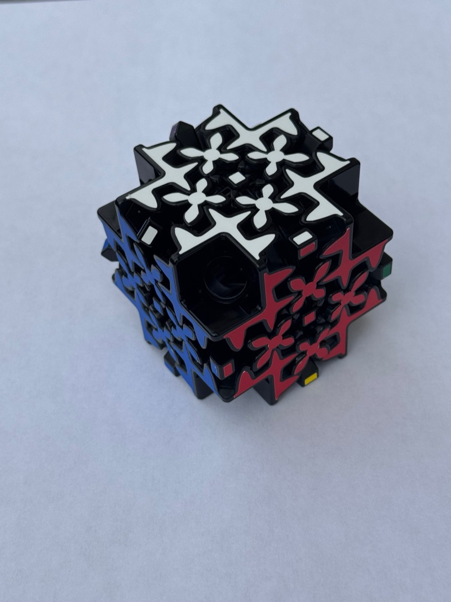
Finally, rotate the Edges. Note that the Face Center Edge rotations don't matter, as long as they're in place, so you only need to rotate the True Edges. As with Gears, it turns out to simplify things if you first rotate all the Edges into "even" rotations (either correct or flipped (rotated 180°)); then fix the remaining flipped ones.
First, rotate the Edges so that each is either correct or flipped. The only sequence needed here is S9:
S9 rotates one pair of opposite Edges an odd amount. At this stage you don't need to get the rotations right; just get them to right or flipped. (With some care, though, you can arrange things so that you're mostly putting things right rather than flipped). You can repeatedly use S9 with simple setup moves to do this for all Edges.
It can happen that there are an odd number of Edge pieces with odd rotation. In that case, you can move one of the Face Center Edges to a True Edge position and rotate that 90°, then move it back. For example, if the sole odd-rotated Edge is in position FR, then you can move U to position BL by doing (B L7), then move it back with (L B7) afterwards. That will unfortunately cause four of the True Edges to temporarily move to Face Centers, where they also get rotated by 1/4 turn, so you end up with four odd-rotated Edges. But then you can use the above to get those all back to even rotations:
At this point, the puzzle is solved except that some True Edges are flipped. You can finish up by repeatedly applying the following sequence, in conjunction with setup moves, to flip two Edges at a time:
Some of the sequences above are unusually long compared to other puzzles. There may be shorter ones; these are the best I could find. A lot of these are repetitions of shorter sequences.
The sequences to move the Gears around are long and tedious. This is especially unpleasant because there are 24 Gears. One way to simplify things might be to solve Gears before Corners; maybe there are simpler Gear-solving sequences if we don't have to worry about disrupting Corners. For this to work, we'd then need to find Corner-solving sequences that don't disrupt the Gears.
I found it much easier to rotate Gears before solving Edges, rather than the other way around. Sequences that rotate Gears while leaving Edges unchanged are even more painful than what I ended up with above.